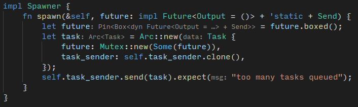

异步是一种并发模式, 是指程序在主线程之外处理一些事件, 举个例子, 主界面加载的同时, 通过异步加载数据, 加载完之后, 更改主界面的内容. 本文的目的在于整理这种模式的使用方法.
大部分编程语言, 除了 C/C++(C++20 除外), 都原生地支持这种并发模式, 甚至 HTML 也支持 async 加载 js, 不同语言的异步形式其实一样.
async 标注异步函数的声明, await 标注异步函数的使用
await, 及物动词
wait for (an event).
异步的目的是不堵塞, 不一定非要线程. 小型任务使用线程是一种浪费[^1], 但不用线程怎么做到多个任务并发? 实在难以想象.
[^1]: creating a thread for such a small amount of work is quite wasteful.
这一节用来探索异步的实现细节
int setNonblocking(int fd)
{
int flags;
if (-1 == (flags = fcntl(fd, F_GETFL, 0)))
flags = 0;
return fcntl(fd, F_SETFL, flags | O_NONBLOCK);
}
不阻塞是否等于异步? 不是, 来看 IO 的同步和阻塞的组合^2, 又称阻塞范式(blocking paradigm)
select)select 性能不好, 不过可以用 epoll仔细辨别, 可以看出为什么这么命名, 有点反直觉, 异步与否和文件描述符的属性有关, 阻塞与否和对待文件描述符的方式有关, 如果你将文件描述符设置为 O_NONBLOCK , 所在范式就叫 Asynchronous; 如果你检查文件描述符的方式是阻塞的, 所在范式就叫 blocking, select 是阻塞的, 因为你需要检查它的返回结果, 这个过程阻塞了同线程的其他操作, 信号是非阻塞的, 因为如果收到信号, 不管当前线程在干什么, 都要停下来(被中断), 信号是一种异步通知机制[^11]
[^11]: https://en.wikipedia.org/wiki/Signal_(IPC) : A signal is an asynchronous notification
概念:
处理异步事件的方法:
异步 I/O 库, 用于 node.js, 在 Linux 上基于 epoll(), 使用线程池. 异步虽然反对一个任务开启一个线程, 但实际上并不排除线程. 线程池是更经济的做法.
异步提供了一层不阻塞的多任务接口, 具体实现
Javascript 是异步编程的代表, 为什么? 暂且不论到底是不是 js 导致异步的出现. JS 只有一条线程, 但又不能让 I/O 阻塞, 所以它把任务交给浏览器^7, 浏览器完成任务后执行回调函数. 或者让浏览器执行回调函数.回调函数有个缺点, 就是造成回调地狱, 遇到参数包含回调函数的接口, 你可能要写一层又一层的回调函数.
2015 年 js 有了 async/await 语法, 用 Promises 表示异步任务, 异步任务处于 2 种状态: 完成和未完成. Promise 和 Rust 的 Future 一样. 不同的是, 对 Future, 你需要手动写 Poll 方法, 即轮询检查. Promise 不需要 Poll, 一切交给浏览器.
js async 函数返回一个 promise:
async function foo() { return 1; }
解析器将 1 封装成 Promise, 相当于
async function foo() { return Promise.resolve(1); }
Promise 如果就绪, 则通过 then() 使用返回值, 在这个例子里也就是 1
foo().then(
function(value) {
console.log(value);
},
function(error) {
console.log(value);
}
)
foo() 返回的 Promise.resolve(1) 被 then 解封后得出 1, 作为 value 的形参传入第一个函数
另外一个例子: 下载一张图片
fetch(
"https://i0.wp.com/acoup.blog/wp-content/uploads/2021/08/20210813000543_1.jpg?resize=1024%2C576&ssl=1"
)
.then((response) => {
if (!response.ok) {
throw new Error(`HTTP error! status: ${response.status}`);
} else {
return response.blob();
}
})
.then((myBlob) => {
let objectURL = URL.createObjectURL(myBlob);
let image = document.createElement("img");
image.src = objectURL;
document.body.appendChild(image);
})
.catch((e) => {
console.log(
"There has been a problem with your fetch operation: " + e.message
);
});
throw^8then<img> 节点可以看出, then() 有两种语法, 实际上是一种^7
p.then(onFulfilled[, onRejected]);
p.then(value => {
// fulfillment
}, reason => {
// rejection
});
上面有一句 Promise.resolve(1), 上述术语表明 resolve()^9 是一个 Promise 主动解析的过程
单从 Javascript 的语法分不清 Promise 是像 window 那样的全局变量还是类. Promise.resolve() 实际上相当于 C++ 的 Promise::resolve()
上述例子中, 我们没看到 fetch() 是如何实现, 只有知道怎么使用 async/await 才算了解现代异步
第一原则:
async function 声明返回 Promise 的函数await 等待 Promise, await 所在函数所有语句是同步的, await 起到阻塞作用await 阻塞当前作用域, 不阻塞外部调用者, 调用者在 await 触发瞬间切换到其他任务上一节的下载图片并创建 <img> 的代码可以写成这样
async function myFetch() {
let response = await fetch('coffee.jpg');
if (!response.ok) {
throw new Error(`HTTP error! status: ${response.status}`);
}
let myBlob = await response.blob();
let objectURL = URL.createObjectURL(myBlob);
let image = document.createElement('img');
image.src = objectURL;
document.body.appendChild(image);
}
myFetch()
.catch(e => {
console.log('There has been a problem with your fetch operation: ' + e.message);
});
意图, 含义都很明显
先看 Future 的定义
#[must_use = "futures do nothing unless you `.await` or poll them"]
#[lang = "future_trait"]
pub trait Future {
type Output;
#[lang = "poll"]
pub fn poll(
self: Pin<&mut Self>,
cx: &mut Context<'_>
) -> Poll<Self::Output>;
}
Attempt to resolve the future to a final value, registering the current task for wakeup if the value is not yet available. (还没说注册到哪去)
This function returns:
- Poll::Pending if the future is not ready yet
- Poll::Ready(val) with the result val of this future if it finished successfully.
Once a future has finished, clients should not poll it again.
When a future is not ready yet,
pollreturnsPoll::Pendingand stores a clone of theWakercopied from the current Context.(Future 是一个 trait,poll没有实现, 这就意味着, 在实现poll的时候需要手动做这件事) ThisWakeris then woken once the future can make progress (make progress? 是指操作系统把控制权返回给 Future 所在线程?). For example, a future waiting for a socket to become readable would call .clone() on theWakerand store it. When a signal arrives elsewhere indicating that the socket is readable,Waker::wakeis called and the socket future’s task is awoken. (Waker::wake()之后唤醒 Future 的任务, Future 只是一个适配器, 重点还是任务) Once a task has been woken up, it should attempt to poll the future again, which may or may not produce a final value.Note that on multiple calls to poll, only the Waker from the Context passed to the most recent call should be scheduled to receive a wakeup. (不知道在说什么)
文档十分抽象, 大意是, 如果你检查 Future, 如果它处于未完成状态, 则将它注册为待唤醒事件. 又说, 如果它处于未完成状态, 你要将 waker 函数从当前 Context 中克隆一份给它. 当 Future 有进展的时候, 调用 waker, 在 waker 里面操作 Future 封装的事务.
例子来自 The Rust Async Book
这个过程看起来相当简单, 采用了 Reactor 模式. 但用 Rust 实现起来很难.
关键点:
从上面几点, 结合上面的 4 种阻塞模式可以看出 reactor 设计模式属于 asynchronous blocking I/O, asynchronous 是因为不用阻塞型文件描述符(反证法: 用阻塞的文件描述符有性能问题). blocking 是因为 event 不是 signal.
Reactor = dispatcher, notifier[^13]
[^13]: 据说是 Reactor 的最初出处, http://www.dre.vanderbilt.edu/~schmidt/PDF/reactor-siemens.pdf
没有准确定义, 个人认为, 工程上的东西不需要准确定义, reactor 不如 dispatcher 准确. Reactor 只是一个头脑发热的命名, 当别人说反应堆的时候, 你第一反应认为那是事务进行的地方, 但没想到就是一个分发器.
#### 小结
一言概之, reactor 模式就是分发器将任务分发给执行者, 执行者完成之后, 将反馈作为事件发送到事件队列的的一种事件驱动模式,
The Rust Async Book 用 Reactor 模式实现了异步计时器, 但与其说是在实现计时器, 不如说是在和 Rust 语法搏斗. 最后 Reactor 的 busy polling 也有浪费资源之嫌. 往后可以用更成熟的异步运行时取代自己写的 Poll, 现在我们只需体会这本书提供的实现逻辑.
关键代码我用 >>> 和 <<< 标注
>>>>>>>>>>>>>>>>>>>>>>>>>>>>>>>>>>>>>>>>>>>>>>>>>
关键代码
<<<<<<<<<<<<<<<<<<<<<<<<<<<<<<<<<<<<<<<<<<<<<<<<<
// Spawn a task to print before and after waiting on a timer.
spawner.spawn(async {
println!("howdy!");
// Wait for our timer future to complete after two seconds.
>>>>>>>>>>>>>>>>>>>>>>>>>>>>>>>>>>>>>>>>>>>>>>>>>>>>
TimerFuture::new(Duration::new(2, 0)).await;
<<<<<<<<<<<<<<<<<<<<<<<<<<<<<<<<<<<<<<<<<<<<<<<<<<<<
println!("done!");
});
用一个 async 匿名函数封装打印函数和 Future, .await 返回一个 Future.
wakerTimeFuture::new 开启了一个线程, 睡眠特定时间.
impl TimerFuture {
pub fn new(duration: Duration) -> Self {
let shared_state = Arc::new(Mutex::new(SharedState {
completed: false,
waker: None,
}));
let thread_shared_state = shared_state.clone();
// https://doc.rust-lang.org/book/ch16-01-threads.html
// move 使你可以将数据从一个线程移入另一个线程
thread::spawn(move || {
>>>>>>>>>>>>>>>>>>>>>>>>>>>>>>>>>>>>>>>>>>>>>>>>>>>>>>>>>>>>
// 注意: 线程创建函数立即返回
thread::sleep(duration);
<<<<<<<<<<<<<<<<<<<<<<<<<<<<<<<<<<<<<<<<<<<<<<<<<<<<<<<<<<<<
let mut shared_state = thread_shared_state.lock().unwrap();
// 线程还在睡眠的时候, Executor 可能检查了 shared_state 的状态
shared_state.completed = true;
if let Some(waker) = shared_state.waker.take() {
waker.wake()
}
});
TimerFuture { shared_state }
}
}
在上面代码中, 有一段注释说了
// 线程还在睡眠的时候, Executor 可能检查了 shared_state 的状态
sequenceDiagram
autonumber
participant main thread
participant executor
participant working thread
main thread->>working thread: spawn that thread
activate working thread
executor->>working thread: check shared_state
working thread->>main thread: timeout
deactivate working thread
如果检查到 shared_state 还没完成, 就给它克隆一个 waker
impl Future for TimerFuture {
type Output = ();
fn poll(self: Pin<&mut Self>, cx: &mut Context<'_>) -> Poll<Self::Output> {
// Look at the shared state to see if the timer has already completed.
let mut shared_state = self.shared_state.lock().unwrap();
if shared_state.completed {
Poll::Ready(())
} else {
// Set waker so that the thread can wake up the current task
// when the timer has completed, ensuring that the future is polled
// again and sees that `completed = true`.
//
// It's tempting to do this once rather than repeatedly cloning
// the waker each time. However, the `TimerFuture` can move between
// tasks on the executor, which could cause a stale waker pointing
// to the wrong task, preventing `TimerFuture` from waking up
// correctly.
//
// N.B. it's possible to check for this using the `Waker::will_wake`
// function, but we omit that here to keep things simple.
>>>>>>>>>>>>>>>>>>>>>>>>>>>>>>>>>>>>>>>>>>>>>>>>>>>>>>>>>>>>
shared_state.waker = Some(cx.waker().clone());
Poll::Pending
<<<<<<<<<<<<<<<<<<<<<<<<<<<<<<<<<<<<<<<<<<<<<<<<<<<<<<<<<<<<
}
}
}
再看一遍代码, sleep -> completed -> waker.wake().
impl TimerFuture {
pub fn new(duration: Duration) -> Self {
let shared_state = Arc::new(Mutex::new(SharedState {
completed: false,
waker: None,
}));
let thread_shared_state = shared_state.clone();
thread::spawn(move || {
thread::sleep(duration);
let mut shared_state = thread_shared_state.lock().unwrap();
shared_state.completed = true;
>>>>>>>>>>>>>>>>>>>>>>>>>>>>>>>>>>>>>>>>>>>>>>>>>>>>>>>>>>>>
// 醒来之后执行 waker(), 后者是在 poll 的时候安装上去的
if let Some(waker) = shared_state.waker.take() {
waker.wake()
}
<<<<<<<<<<<<<<<<<<<<<<<<<<<<<<<<<<<<<<<<<<<<<<<<<<<<<<<<<<<<
});
TimerFuture { shared_state }
}
}
waker 的由来接下来是一种回环的赋值, 不知道是不是使用 Rust 的代价, 为了"安全编码"绕了一圈.
# 伪代码
future.waker = task -> context -> waker;
task.future = future;
impl Executor {
fn run(&self) {
while let Ok(task) = self.ready_queue.recv() {
// Take the future, and if it has not yet completed (is still Some),
// poll it in an attempt to complete it.
let mut future_slot = task.future.lock().unwrap();
if let Some(mut future) = future_slot.take() {
// Create a `LocalWaker` from the task itself
>>>>>>>>>>>>>>>>>>>>>>>>>>>>>>>>>>>>>>>>>>>>>>>>>>>>>>>>>>>>
let waker = waker_ref(&task);
let context = &mut Context::from_waker(&*waker);
<<<<<<<<<<<<<<<<<<<<<<<<<<<<<<<<<<<<<<<<<<<<<<<<<<<<<<<<<<<<
// `BoxFuture<T>` is a type alias for
// `Pin<Box<dyn Future<Output = T> + Send + 'static>>`.
// We can get a `Pin<&mut dyn Future + Send + 'static>`
// from it by calling the `Pin::as_mut` method.
// I: 就在这个此处传入 context
if let Poll::Pending = future.as_mut().poll(context) {
// We're not done processing the future, so put it
// back in its task to be run again in the future.
*future_slot = Some(future);
}
}
}
}
}
关于 context
let waker = waker_ref(&task);
let context = &mut Context::from_waker(&*waker);
waker_ref 的作用是将从 Arc<impl ArcWake> 中返回一个 Waker
注意到 Task 实现了 ArcWake
>>>>>>>>>>>>>>>>>>>>>>>>>>>>>>>>>>>>>>>>>>>>>>>>>>>>>>>>>>>>>>>>>
impl ArcWake for Task {
fn wake_by_ref(arc_self: &Arc<Self>) {
// Implement `wake` by sending this task back onto the task channel
// so that it will be polled again by the executor.
let cloned = arc_self.clone();
arc_self
.task_sender
.send(cloned)
.expect("too many tasks queued");
}
}
<<<<<<<<<<<<<<<<<<<<<<<<<<<<<<<<<<<<<<<<<<<<<<<<<<<<<<<<<<<<<<<<<<
Context::from_waker()
Currently,
Contextonly serves to provide access to a&Wakerwhich can be used to wake the current task.
只是适配接口. 现在的问题是, 什么时候调用 Task 的 wake_by_ref()? 查看文档, wake_by_ref() 相当于 C/C++ 的 p_waker->wake()
工作线程从睡眠中醒来之后, 执行 waker.wake(), 也就是调用了 wake_by_ref(), 这时, Task 又将自己发送到管道中去. 下一次 Executor 拿到这个 Task , 把 Future 提取出来 poll 的时候, 会发现与之关联的业务已经完成.
impl Future for TimerFuture {
type Output = ();
fn poll(self: Pin<&mut Self>, cx: &mut Context<'_>) -> Poll<Self::Output> {
let mut shared_state = self.shared_state.lock().unwrap();
>>>>>>>>>>>>>>>>>>>>>>>>>>>>>>>>>>>>>>>>>>>>>>>>>>>>>>>>>>>>>>>
if shared_state.completed {
println!("{} is done", shared_state.name);
Poll::Ready(())
<<<<<<<<<<<<<<<<<<<<<<<<<<<<<<<<<<<<<<<<<<<<<<<<<<<<<<<<<<<<<<<
} else {
println!("{} is pending", shared_state.name);
shared_state.waker = Some(cx.waker().clone());
Poll::Pending
}
}
}
future.as_mut().poll(context) 的时候如果遇到 Poll::Pending, 就会更新 future 本身的状态, 注意 future.poll 的第一个参数是 self, 那么确实需要将 future 放回到原来的 Task 中. 另外还可以看到 future_slot.take() 返回的不是引用, 而是直接将 future 从 future_slot 中移出来了.
if let Some(mut future) = future_slot.take() {
// Create a `LocalWaker` from the task itself
let waker = waker_ref(&task);
let context = &mut Context::from_waker(&*waker);
// `BoxFuture<T>` is a type alias for
// `Pin<Box<dyn Future<Output = T> + Send + 'static>>`.
// We can get a `Pin<&mut dyn Future + Send + 'static>`
// from it by calling the `Pin::as_mut` method.
>>>>>>>>>>>>>>>>>>>>>>>>>>>>>>>>>>>>>>>>>>>>>>>>>>>>>>>>>>>>
if let Poll::Pending = future.as_mut().poll(context) {
// We're not done processing the future, so put it
// back in its task to be run again in the future.
*future_slot = Some(future);
}
<<<<<<<<<<<<<<<<<<<<<<<<<<<<<<<<<<<<<<<<<<<<<<<<<<<<<<<<<<<<<
}
pub fn take(&mut self) -> Option<T>Takes the value out of the option, leaving a None in its place.
Pin看这本书的第四章, 结论: Pin 是为了防止移动数据, 有一些数据结构有自引用的特征, 移动它们会导致引用失效.
那为什么要 Pin Future?
The first change you'll notice is that our
selftype is no longer&mut Self, but has changed toPin<&mut Self>. We'll talk more about pinning in a later section, but for now know that it allows us to create futures that are immovable. Immovable objects can store pointers between their fields, e.g.struct MyFut { a: i32, ptr_to_a: *const i32 }. Pinning is necessary to enable async/await.
对, 我们知道了 Pin 防止移动, 但是为什么 Future 不可移动, 不是用管道发送 Future 了吗? 当然我们很容易就想到, 不是非要发送 Future 实体, 可以发送引用.
首先我们看 Future 在什么位置:
// Spawn a task to print before and after waiting on a timer.
spawner.spawn(async {
println!("howdy!");
// Wait for our timer future to complete after two seconds.
TimerFuture::new(Duration::new(2, 0)).await;
println!("done!");
});
在栈上. 但在 Spawner::spawn() 中, 它被 boxed() 到堆上, 接着, 被放入 Task 中. 借助 rust-analyzer 可以看到类型.

Arc<Task> 也是堆上的类型, 但没人在堆上移动它们, task_sender.send() 只是发送了它的指针, 指针可以随便拷贝, 移动. 没人移动 Task, 也没人移动 Future, 一切安然无恙, 因此, 在这个场景里面, Pin 很大程度上是为了满足 poll 接口的要求.
如果要写自己的异步应用, 可能需要这些步骤
waker()Future, 通过共享变量关联业务的工作线程, 同时启动工作线程, 并记住以后要通过共享变量来观察工作线程的状态, 记住 Future 就是观察者boxed() Future, 封装一层 Arc, 封装成观察任务 Task, 用管道实现生产消费者模式poll 观察工作线程是否结束, 如果结束, 则观察结束. 否则, 用 Context 封装 waker, 并将 waker 传给共享变量, 工作线程在结束之后, 会提取此函数并执行.